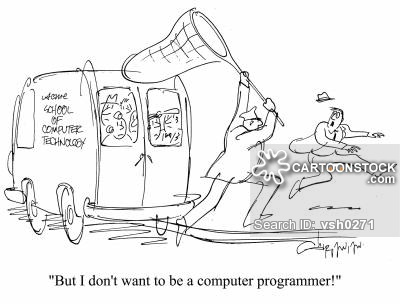
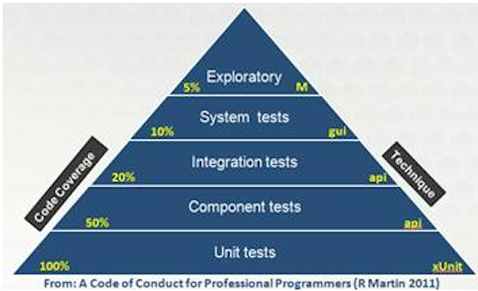
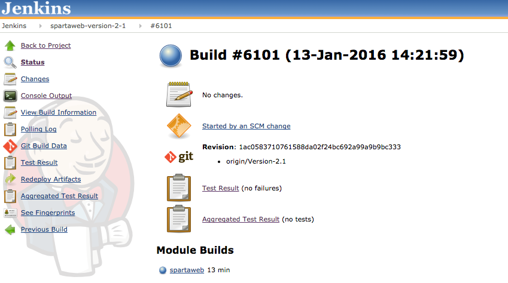
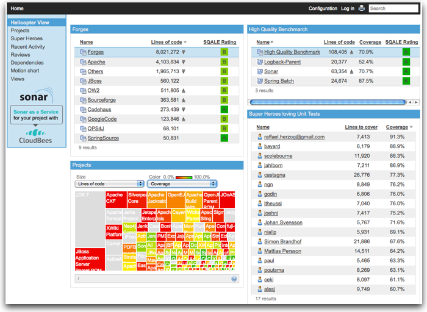
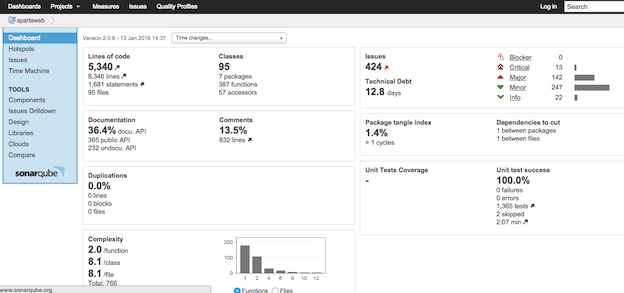
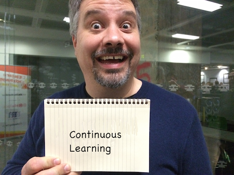

Developer Disciplines
Chris Howe-Jones
20th March 2017
Developer Disciplines
Who wants to be a Developer?
Developer

What makes a 'Developer'?
- Why it matters?
- Why am I qualified to talk to you?
Who am I?
Name: Chris Howe-Jones [Technical Navigator]
Twitter: @agile_geek
Github: http://github.com/chrishowejones
Blog: http://chrishowejones.wordpress.com
LinkedIn: https://uk.linkedin.com/in/chrishowejones
Organiser: London Clojurians, Clojure eXchange, ClojureBridge
Speaker: FP North East, Agile North East, London Clojurians, Dynamo Conference, West Midlands JUG, DefShef
Worked for?

Jobs?

Languages?

Technologies and Disciplines?

So?
Why do you care?
Because I'm the person who will employ you!
Or someone just like me
What Disciplines?
Don't I just need to program?
What else do I need?
Software Development is a Complex World

Multi-Disciplined Teams
- Developers/Programmers
- Testers/QA
- Business Analysts
- Scrum Masters
- Product Owners
- Project Managers
- Tech Leads
- Team Leaders
- Product Managers
Complex Environment
- Polyglot Programming
- multiple languages
- Polyglot Persistence
- multiple persistence technologies
- Cloud Deployment
- elastic virtualised environments
- servers on demand
Disciplines
- TDD
- BDD
- Test Pyramid
- Unit,
- System,
- Integration,
- Performance,
- Stress,
- Failure,
- Load,
- Functional
- SDLC
- 'Waterfall',
- Scrum,
- DSDM,
- Kanban
- Version Control
- frequent,
- small,
- incremental
- Continuous Integration
- Continuous Deployment
- Automated testing
- Automated build
- Static code analysis
- Peer review
- Functional review
- Refactoring
- Debugging
- SOLID principles
- Single Responsibility Principle - a class should have only a single responsibility
- Open for Extension, Closed for Modification
- Liskov Substitution Principle - "objects in a program should be replaceable with instances of their subtypes without altering the correctness of that program."
- Interface Segregation Principle - “many client-specific interfaces are better than one general-purpose interface.”
- Dependency Inversion Principle - one should “Depend upon Abstractions. Do not depend upon concretions.”
- Referential transparency
- Immutability
- Reduced side effects
What's most important?
I had a manager who asked?
How do you know when you've finished?
- You decide what success is
- You write tests to prove it
- You implement your code
- You run your tests
- They pass
YOU'RE DONE!
Test, test, test again…

Types of testing?
Only really two types of test…
- Developer Tests
- User Tests
Developer Tests
- Unit
- Integration
- System
Non functional
- Performance
- Security
- Stress
- Resilience
…etc
User Tests
Functional
- Smoke tests
- Sanity testing
- Explorative testing
- Regression testing
- Usability testing
- Accessibility testing
- Acceptance testing
Tests to discover design
Test Driven Development
Test Driven Development
What is Test Driven Development?
What?
Incremental process to build low level design through the feedback mechanism of tests, written tests first.
Why?
- Tests code (automated and run in build).
- Evolves design constantly checking against tests for 'completeness'.
- Provides automated 'safety net' to catch 'breaking changes'.
- Enables rapid and radical design changes in future.
- Avoids 'big ball of mud'
Good design is testable, And design that isn’t testable is bad.
“I haven’t got time to test that…” If it's worth building, it's worth testing.
If it's not worth testing, why are you wasting your time working on it?
Tests are your first users.
Tests can be your documentation
If TDD hurts..you're doing it wrong.
“The story of the unforeseen requirement.”

How?
- Write a (failing) test.
- Run a (failing) test.
- Write the (simplest) implementation to get the test to pass.
- Run test (if pass do next step else do 3)
- Refactor implementation (and/or test) to remove duplication.
- Repeat from step 1.
How?

When?
ALL THE TIME
TDD?
Test Driven
Design
Version Control - SCM
Git, Subversion, CVS, VSS, Mercurial, PVCS
What it's not
- Backup
- Centralised code sharing
What it is
It's a Time Machine
Small, incremental changes
Record of events
Who
What
When
Why
What can you do with it?
Rewind time
Try out a change safely
Integrate code across team
Why is it important?
It tells a story.
It protects you from mistakes.
It enables review.
Other Important Disciplines?
Continuous Integration
"Continually integrating (and testing) code across a team."
- Merging code regularly.
- Regression testing.
Continous Build

"Continually build (and testing) code across a team."
- Automated builds.

- Build on merges.
- Tests run on build.
- E.g. Jenkins, TeamCity, etc.
Continous Deployment
"Continually deploy (verified) code to 'live'."
- Automated deployment.
- 'Push Button' deployment.
Static Code Analysis Tools

"Analyse code for style and common 'bugs'."

- C# - Resharper, FxCop, StyleCop…
- Java - Sonar, CheckStyle, FindBugs…
Automated Code Formatter
"Automatically format code to 'team' or 'organisational' standards."
Property or Generative Testing
"In computer science, a property testing algorithm for a decision problem is an algorithm whose query complexity to its input is much smaller than the instance size of the problem. Typically property testing algorithms are used to decide if some mathematical object (such as a graph or a boolean function) has a "global" property, or is 'far' from having this property, using only a small number of 'local' queries to the object."
WHAT?
"A high level approach to testing in the form of abstract invariants [that] functions should satisfy universally."
WHAT?
"Property-based tests make statements about the output of your code based on the input, and these statements are verified for many different possible inputs."
Command Line is your Friend
"Don't be afraid of the command line."
What others say are important disciplines?
"Take baby steps and always look for stepping stones, be obsessed with feedback, keep it simple, communicate as much as you can"
Giuseppe Capizzi, Developer Pivotal Labs
Co-organiser: CodeLovers
Speaker: Bergamo Linux User Group, CodeLovers, Milano XP User Group, ClojureBridge
"…SCM, tests, simplifying, static analysis, reviews to share knowledge." "…thinking, talking, sharing…"
Glen Mailer, Freelance Software Developer
Organiser Sheffield Geeks, DefShef
Speaker: Sheffield Geeks, Clojure eXchange 2015
"deliberate practice using fast feedback."
Philip Potter, Tech lead on registers at @gdsteam
Speaker: London Clojurians, EuroClojure, Clojure eXchange, CodeMesh
"code as if you are going to support your own code…because you might have to."
Mazhar Iqbal, Tech lead UBS Bank

"learn your short-cut keys."
Stephen Hobbs, Development Consultant at Opencast Software

"frequent commits to source control."
Chris Ford, Functional Composer at Thoughtworks
Speaker: London Clojurians, EuroClojure, Clojure eXchange, Strange Loop - St Louis, GOTO Berlin
"Simplifying code, document processes, range based estimates, low coupling, code formatters, lint, automation, few side effects."
Michael Langford, Founder and iOS Development Director Rowdy Labs, Atlanta GA

Bruce Durling, Co-founder & CTO Mastodon C, London
Co-founder London Clojurians, Co-organiser Clojure eXchange, EuroClojure board, Co-organiser Functional Programming Exchange.
Speaker: Data Science, Clojure, Functional Programming.